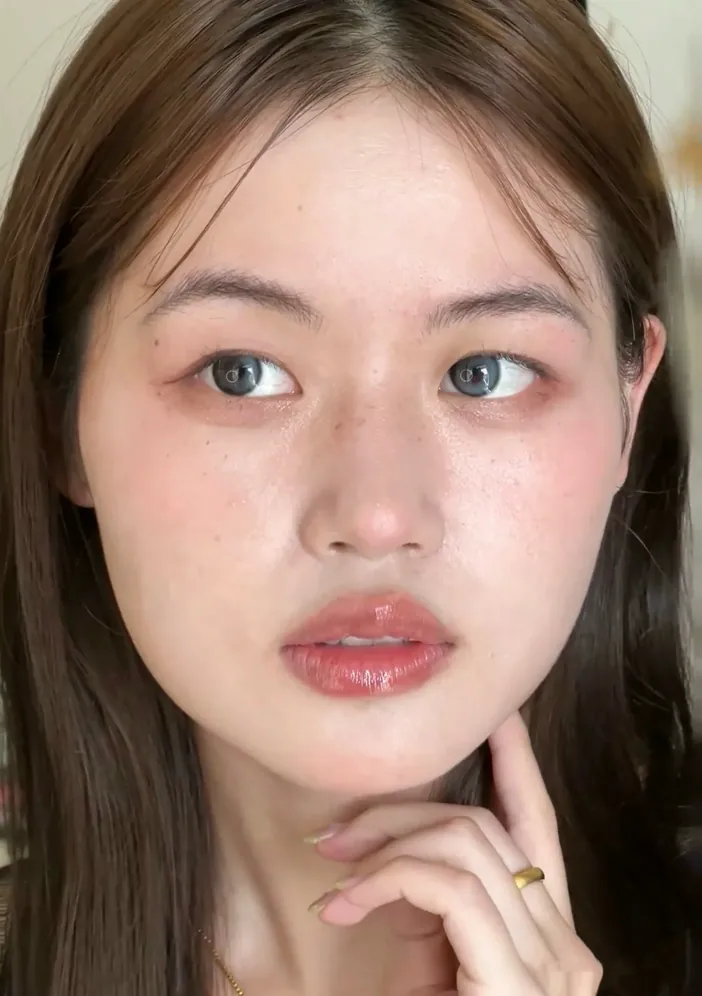
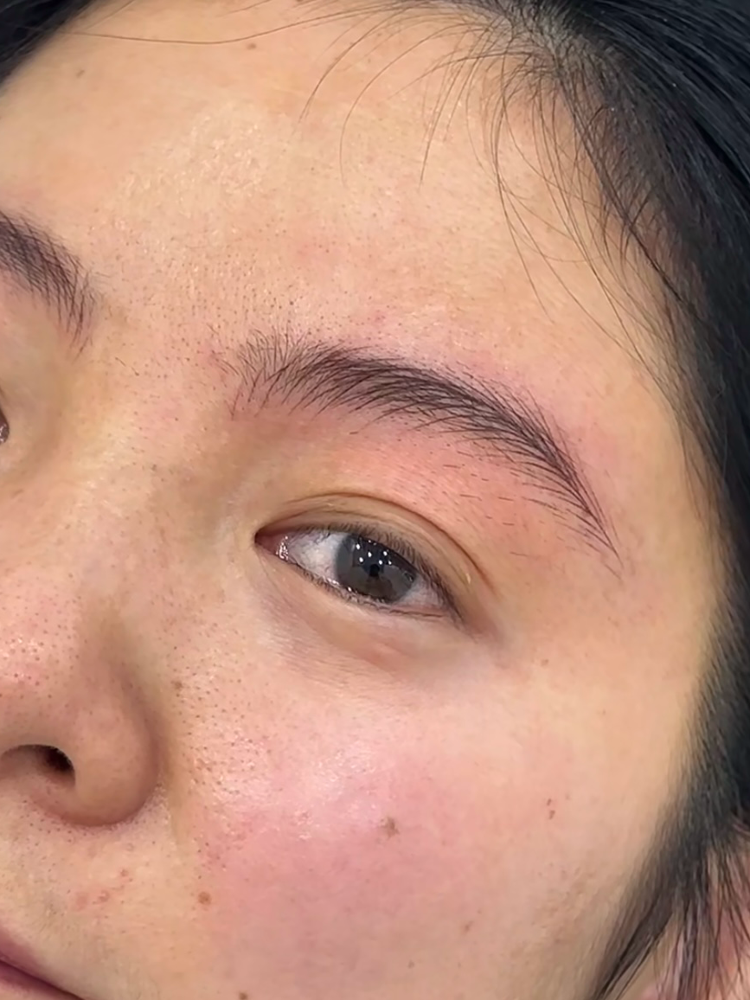
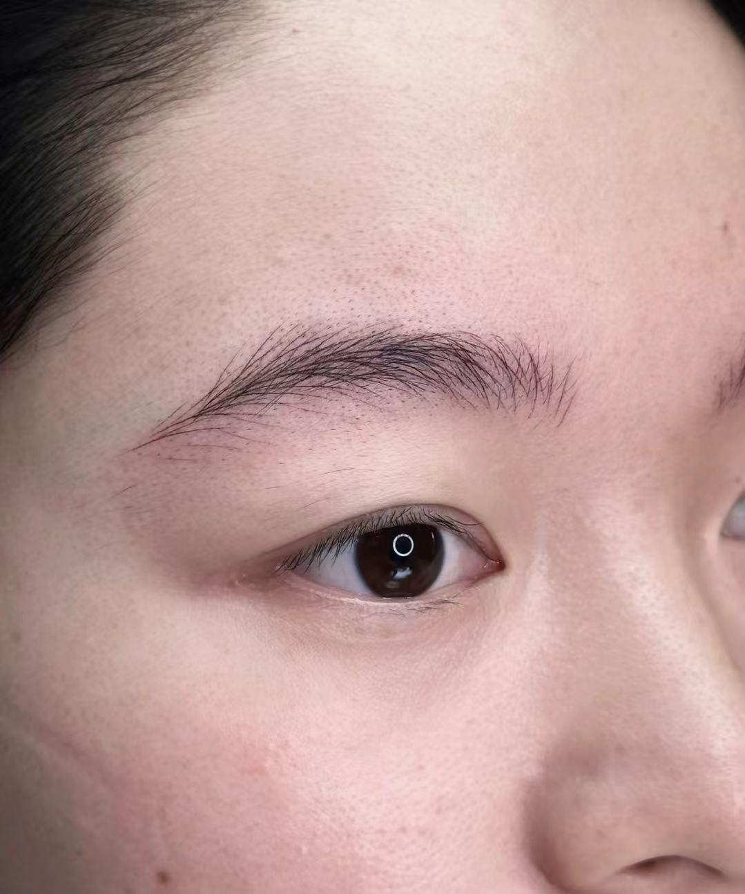

线条，是怎样做出来的？
本店操作过程局部记录。点开视频，观察线条的操作方式。
了解野生眉做法上海浦东 · 前滩 / 三林
从眉骨、五官比例到原生毛流，
找到适合你的眉形与线条。
自然的细节，留给近看。
设计约30–45分钟 · 看过眉形，再决定做不做

从整张脸的协调，到一根线条的走向。
这里是描眉画目的真实作品记录。

放回整张脸里，看粗细、眉峰与眉尾的关系。

眉头、眉身、眉尾，各自有不同的生长方向。

近看眉峰的过渡，也看眉尾如何自然收拢。
作品来自本店已获授权的模特与顾客记录。照片呈现各人的实际状态，具体设计需结合本人基础。
一对眉毛不独立于整张脸。到店时，我们先把这些细节一起看清楚。
结合眉骨、眼部轮廓、脸型与五官量感，讨论眉峰的位置、眉尾的长度和整体比例。
看现有眉毛的浓淡、粗细与生长方向。哪些可以保留，哪些需要补充，先有依据再画线条。
平时化不化妆，喜欢柔和还是利落，都可以说。把眉形设计出来给你看，确认后再决定。
画派单仪器野生眉，按原生毛质选择电流仪或半抛机。适合希望调整基础眉形、效果接近原生、没有妆感的需求。
了解单仪器与双仪器的区别画派双仪器初绒野生眉，电流仪铺绒毛线，半抛机走主线与结构线。毛流感与立体度更明显，有轻微妆感；结合缺眉位置、底色与现场设计选择。
查看完整做法手工针片走线，依靠老师控制力度与走向。前一周颜色会偏深，恢复期约7天，维持约一年；具体情况因个人状态而异。
查看恢复与服务说明所有项目一年内免费补色。项目价格以大众点评当期信息为准；做之前讲清项目，不做升单。

2016年进入纹绣行业，曾在大型连锁美容院担任外聘纹绣师，在专业纹绣连锁机构从事纹绣工作，也有培训和纹绣讲师经历。
2024年8月，在上海浦东三林创立描眉画目·定制美学。现在，以个人工作室的方式，由本人一对一设计、操作。
看操作、辨做法，也给自己的问题留一点时间。
还有疑问，可以先联系工作室。
不必在预约前决定做哪一项。
到店设计免费，约30–45分钟。先看眉毛基础、脸型、五官量感和个人风格，把眉形设计出来给你看。你觉得可以再决定做不做，不做也不收费。
单仪器按原生毛质选电流仪或半抛机，适合希望调整基础眉形、接近原生且没有妆感的需求。双仪器配合完成绒毛线和结构线，毛流感、立体度更明显，有轻微妆感。具体选择结合原生眉基础、底色和现场设计，不是档位越高越合适。
由主理人乐乐老师本人设计、操作。工作室采用预约制，同一时段一对一接待，建议提前联系确认时间。
项目价格以大众点评当期信息为准，也可以到店前咨询。所有项目一年内免费补色；做之前确认项目，不做升单。
先评估底色情况，底色太深时建议先去色。是否适合直接做，需要现场判断；旧眉修复不是工作室的主打项目。
上海市浦东新区三林长清路1200弄39号1613室，位于前滩南侧。地铁6号线灵岩南路站2号口往西步行约300米。周一至周日10:00–20:00，微信MiaoMeiHuaMu，电话19282182068。